原文连接:https://www.cnblogs.com/liwenhu/p/11784295.html
目录
GIT版本管理工具教程
一 Git初始化
下载安装， 下载地址： https://git-scm.com/downloads 每个系统的都有（linux、mac、windows等），看官网的安装教程，很详细，此处我以windows来练习
首先创建一个文件夹，这个文件夹就是我们将来通过git来管理的所有文件的存放地点 。
在文件夹中右键 使用Git Bash
在弹出的窗口中执行初始化指令，让git帮我们对这个文件夹中的所有文件以及文件夹进行管理
git init #创建git版本管理的本地仓库产生的.git文件夹用来存放你管理的文件的所有版本以及git配置相关的内容，不要轻易动它
二 简单指令使用
基本操作
git status 查看仓库中所有的文件夹和文件的状态
git add supercrm 让git管理单独的文件夹或者文件
git add . 管理所有文件和文件夹
配置用户名和邮箱
$ git config --global user.name <用户名>
$ git config --global user.email <邮箱地址>
例如：
$ git config --global user.name "吴超"
$ git config --global user.email "1069696250@qq.com"
然后就可以提交版本了，看指令
git commit -m '描述信息'
例如： git commit -m 'v1版本'管理之后进行二次开发，修改一些文件之后：
git add supercrm
git commit -m 'v2版本'查看日志
git log简单总结
1 进入要管理的目录
2 git init初始化 即：让git管理我们当前的文件夹
3 git status 检测当前文件夹中的文件状态
4 三种颜色的变化
a 红色：新增文件或者修改的老文件 --> 执行git add .（或者单个文件或文件夹的名称）
b 绿色：git已经管理起来了 --> 执行git commit -m '描述信息'
c 白色：生成版本了
好，之后我们会细说这几个颜色到底还有什么意义
5 git log 查看版本记录三 Git进阶
Git三大区域
介绍： 作区(写代码的地方)—git add暂存区(临时存储)—git commit本地库(历史版本)
Git的版本库里存了很多东西，其中最重要的就是称为stage（或者叫index）的暂存区，还有Git为我们自动创建的第一个分支master，以及指向master的一个指针叫HEAD。
文件往Git版本库里添加的时候，是分两步执行的：
第一步用git add把文件添加进去，实际上就是把文件修改添加到暂存区。
第二步是用git commit提交更改，实际上就是把暂存区的所有内容提交到当前分支。
创建Git版本库时，Git自动为我们创建了唯一一个master分支，git commit就是往master分支上提交更改。add需要提交的文件修改通通放到暂存区，然后commit可一次性提交暂存区的所有修改Git回滚
假如我们现在写了三个版本了，但是你发现第三个版本有问题，或者说被迫的下线第三个版本添加的新功能，那么我们是不是要将代码回到第二个版本的状态啊，如果我们自己手动去修改是不是就非常的麻烦了，所以此时就用到我们git回滚功能了 。
git log #查看日志，每个版本都有版本号 Git回滚操作指令
git reset --hard 版本号
例如：git reset --hard a3c69761b4ecd8b23c392315cd245f2939024882 (第二个版本的版本号) 不过，后来你又觉得第三个版本的功能还是挺好的，接着拿回来用吧，但是你已经回滚到第二个版本了啊，这可怎么办？看操作：
先执行git log，你发现，git log里面没有显示我们原来的第三个版本，对不对，此时我们不能用这个指令来查看了，需要下面这个指令：
git reflog #也是查看日志，但是包括回滚操作的版本
再通过git reset --hard 版本号来回滚
Git的强大之处，能够让我们在任意版本之间来回切换。
我们接着学两个指令
git checkout -- 文件名 #将文件从以修改的工作区回滚到未修改的状态
如果我们将修改i的文件已经添加到了暂存区了，又怎么回滚呢？看指令
git reset HEAD 文件名
如果想让他再回到未修改时的状态，那么就又用到了我们那个git checkout -- 文件名，那个指令了 。
关于回滚，git里面还有几个其他的指令，就不一个一个的演示了，大家看图就明白了：
指令总结
git init
git add
git commit
git log
git reflog
git reset --hard 版本号
Git分支
分支可以给使用者提供多个开发环境，也就是说可以将你的工作从主线中分离出来，以免影响开发主线，等分支的代码开发完之后，再合并到主线代码上，就比如说，我们写了一个毕业论文，大致的流程写完了，但是我们可能觉得某些地方写的太少了（添加新功能），需要丰富一下，或者有些地方可能写的有问题需要调整一下（之前的代码有bug，需要修改），那么我们怎么做呢，是不是会复制一份这个论文，然后再修改，改完之后如果没有什么问题，就将改完之后的作为了最新的版本（分支上添加了新功能或者修复了bug，然后进行分支合并）。
大家在这里先不用去考虑公司里面到底是怎么使用git来进行工作的，我们首先先来看看，如果你在自己的电脑上开发程序，用git是怎么个流程，怎样开分支，分支是个什么样子？
比如，我们现在的代码开发到了第三个版本，之前我们没有说什么分支的概念，其实我们开发代码的时候，默认的分支叫做主分支(master分支)，只是我们一直还不知道。

指令总结
git branch 查看当前分支
git branch dev 创建一个名为dev的分支
git checkout dev 将工作切换到dev分支上
git checkout -b dev #创建并切换到dev分支上，和上面两个指令的效果一样
git branch master
git merge bug #分支合并---首先切换到master分支，然后在master分支上执行merge指令来合并bug分支的代码
git branch -d bug 删除bug分支 比如我当前的代码只到了test3，3版本，我想添加一个新的功能test4，那么我就创建了一个dev分支，并在dev分支上添加了test4，比如说test4需要打印两行内容，但是我现在写了一行内容的时候，发现之前线上使用的代码(线上使用的代码一般是master分支上的)，出现了bug，那么我们需要切换到master分支，并且在master分支上再创建一个bug分支，在bug分支上修复bug，修复完成之后，需要合并到master分支上，合并之后的版本我们暂且称为5版本，记着，5版本的代码和dev开分支时的3版本代码是有些变动的，因为修复了bug，但是dev分支上还是使用的master分支上的v3版本进行的新功能的开发，那么bug修复完之后，我们现在又要回到dev分支上继续新功能的开发，开发完成之后，需要合并到master分支上，合并的时候，你会发现报了一个错误，其实也不是错误，就是提示你，代码有冲突，这冲突怎么来的，你想，master分支已经到了c5版本，但是dev分支上的代码还是从master分支的c3版本的基础进行添加新功能的，所以合并的时候c3版本的其他代码和它c5版本的代码本身就有一些不一样的地方（就是那个bug修复的地方），所以出现了冲突的问题，那么怎么办呢，没办法，我们只能手动来修复冲突，那么怎么修复呢，git会将所有的冲突全部标记在你的代码文件中，有冲突的方法，找到它手动修改一下就可以了。其实，只要我们两个分支中的相同的文件的同一行出现了不同的内容，合并时就会出现冲突。看一下冲突的报错是什么样子的：
出现了bug，我们看看bug在哪里，其实git会将冲突在你的代码文件中标识出来，看图：
这里提示你了，dev分支上是哪些内容，master分支上是哪些内容，我们把没用的删除就可以了，然后提交一个新的版本，这样就完成了分支代码合并
Git工作流
看图： 公司一般最少有两个分支，master只保留正式(线上)版本，dev(develop)分支，开发都在dev分支上搞。
四 Github代码管理仓库
我们做开发的时候，写程序，可能会有多个人一起开发，或者你自己有多个电脑，家里一个电脑，办公室一个电脑，但是你如果刚开始的代码都是在家里的电脑写的，然后你到了公司，你想继续开发你的程序，那么就需要你自己来回的拷贝自己的代码，并随身携带，非常麻烦，你说对不对，所以现在就出现了代码网络托管站(就类似于行李托管站一样)，可以帮你保存你的代码，以及各个版本的代码和所有分支，这样的话，你在家里开发完了之后，把代码放到托管站，就不用自己随身携带了，等你到了公司，使用公司的电脑开发的时候，就可以直接通过网络托管站把自己已经开发好的代码拉下来到自己的本机，然后继续开发，开发完了之后，在交给托管站托管，这样就方便多了，有很多这样的托管站，比如今天我们要说的GIthub，还有GitLab、码云、开源中国、CSDN等都在做代码托管平台。

使用Github有这么几步：
注册Github账号
创建仓库
本地代码推送到仓库
好，那么我就来看看一看具体怎么玩：
第一步：注册Github账号
这个就不带着大家注册了，看图，网址： https://github.com/
注册号账号之后，点击上面的sign in进行登陆，登陆成功之后，会来到这个页面，也就是你的首页

第二步：创建仓库
也就是我们说的托管站里面开辟一个自己的代码托管的空间，看操作

然后会看到下面的页面，看介绍
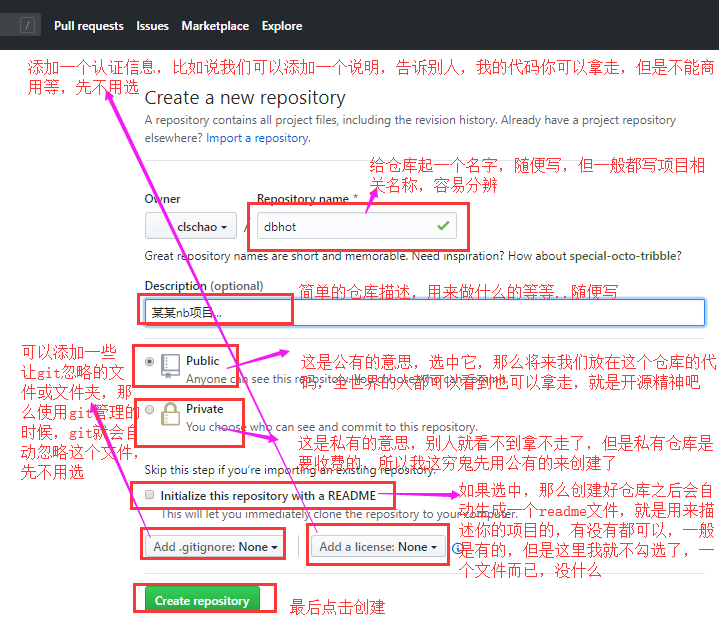
创建好之后我们会看到下面这个页面，其实在GitHub这个托管站上，就相当于我们创建了一个叫做dbhot(就上面我起的那个仓库名称)的文件夹，用来管理我们的项目。

第三步：Github保存代码
将我们的代码和分支推送到GitHub上保存
打开我们的终端，也就是我们那个git bash，查看一下状态。
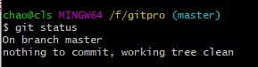
然后看一下推送代码的指令：

查看一下当前的分支

然后执行指令：
然后执行它：
会给你弹出一个窗口，让你输入GitHub的账号和密码，这里我的截图失败了，导致大家在这里看不到效果了，但是没关系，你应该可以搞定的。然后接着看：
等代码都推送成功了之后，我们来GitHub上刷新一下我们的仓库页面，就会看到变化了：


推送一下dev分支到GitHub上：
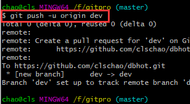
刷新我们的GitHub页面，就看到有两个分支了 
第四步： 拉取GitHub上的代码继续开发
换一个电脑，然后拉取GitHub上的代码继续开发，我这里简单模拟一下，就在本地重新创建一个文件夹了，然后在这个文件夹里面来搞我们的代码
比如：我又创建了一个gitpro2文件夹，然后在这个目录里面使用我们的git bash：

在这里面克隆一下远程GitHub上的代码到我们的这个文件夹里面：
先看一下我们远程仓库的地址是什么，看GitHub：
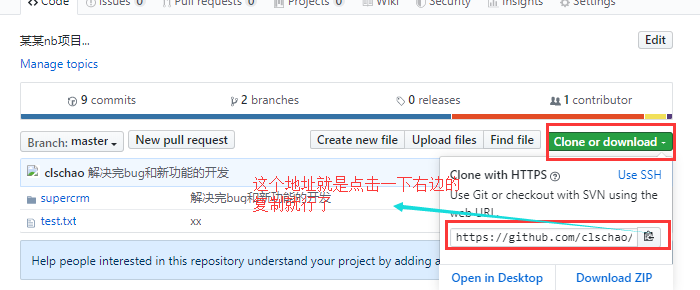
然后执行下面的指令：
git clone 地址
例如： git clone https://github.com/clschao/dbhot.git
然后整个仓库就被我们克隆下来了（包括所有分支，所有代码，所有版本），在我们的gitpro2文件夹里面了，然后我们需要进入到仓库里面才能看到我们的代码：
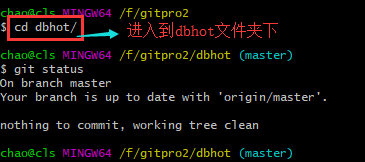

查看一下分支：
切换到dev分支上试试，通过查看提交的版本，你会发现就是我们之前的dev分支：
第五步：换一个电脑继续开发
指令总结
上传代码
1. 给远程仓库起名
git remote add origin 远程仓库地址
2. 向远程推送代码
git push -u origin 分支
在新电脑上第一次获取代码
1. 克隆远程仓库代码
git clone 远程仓库地址(内部已实现git remote add origin 远程仓库地址)
2. 切换分支
git checkout 分支
在新电脑上进行开发
1. 切换到dev分支进行开发
git checkout dev
2. 把master分支合并到dev(仅一次)
git merge master
3. 修改代码
4. 提交代码
git add .
git commit -m 'xx'
git push origin dev
回老电脑上继续写代码
1. 切换到dev分支进行开发
git checkout dev
2. 拉代码
git pull origin dev
3. 继续开发
4. 提交代码
git add .
git commit -m 'xx'
git push origin dev
开发完毕之后，在dev分支上commit，然后切换到master分支上合并一下dev分支，然后推送到GitHub上的master分支上，就算是完成了 。
最后，因为我们dev分支上也是最新的代码了，也可以将我们的dev分支推送到GitHub上的dev分支上，其实推送之前有个好习惯就是在dev分支上合并一下master分支的代码git merge master，这里我没有写，但是个好习惯 。
以后如果我们还想继续开发，我们可以将我们的dev和master分支上的最新的代码都拉下来进行继续开发：
git pull origin dev
git pull origin master
第六步： 如果在公司忘记提交代码，怎么搞？
在公司开发的时候
1. 拉代码
git pull origin dev
2. 继续开发
3. 提交代码
git add .
git commit -m 'xx'
注：忘记push了,没有推给GitHub
回到家继续开发
1. 拉代码，发现在公司写的代码忘记提交到GitHub上了
git pull origin dev
2. 继续开发其他功能
但是在家里写的功能有可能和你在公司开发的代码有些冲突(在同一行)
3. 把dev分支也推送到了远程
git add .
git commit -m 'xxx'
git push origin dev
第二天到了公司继续写代码
1. 拉代码，把昨天晚上在家里写的其他功能的代码拉到本地（有合并、可能产生冲突）
git pull origin dev
2. 如果有冲突,手动解决冲突(公司电脑上昨天忘记push的代码和昨日回到家后写的代码可能有些冲突)
3. 继续开发其他功能
4. 把dev分支也推送到远程
git add .
git commit -m 'xxxx'
git push origin dev
其实git pull origin dev等价于下面两个指令：
git fetch origin dev #将远程仓库dev分支的代码拉到本地git的版本库中，为了和本地dev分支做个区分，远程拉下来的dev分支会叫另外一个名字：origin/dev
git merge origin/dev # 合并远程拉取下来的dev分支的代码
看图：
五 rebase变基
这个rebase和上面学的东西关联性不大，这是一个独立的概念，这个rebase能够让我们的git提交记录变得非常简洁，看图：
rebase的第一个场景
比如看下图，我重新创建了一个文件夹，里面创建了4个文件，每创建一个文件就提交一个版本，现在有下面4个版本了，但是v2、v3和v4版本只是一些没有太大改动的版本，你想把这些记录合并成为一个，就用到了我们的rebase：
看指令：
方式1：
git rebase -i 版本号
例如：git rebase -i 281f2525fb3600b663a6554ed9e301781239bd69 #这个是v2版本的版本号，那么执行这个指令的意思就是将v2版本一直到目前最新版本v4，全部合并到一起
方式2：常用
git rebase -i HEAD~3 #3表示合并3个版本，而HEAD~3的意思是以当前最新的版本开始，合并最近的三个版本，也就是v4、v3、v2将合并到一起 那我们执行一下git rebase -i HEAD~3 这个指令看一下效果，执行完之后你会看到这样一个界面：
然后修改 ：
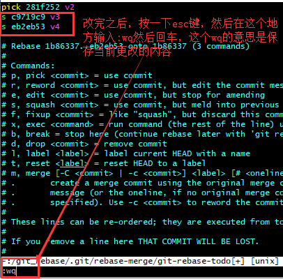
然后你会看到下面的页面：

然后我们在描述信息的地方可以改一些描述信息，比如改成下面的样子：

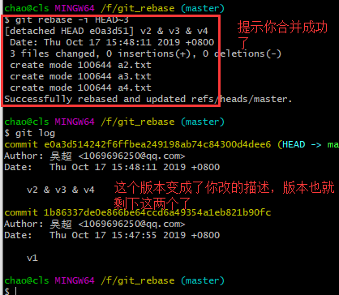
这样我们的提交记录就更加简洁了，但是有个注意事项，如果你合并版本之前，已经将v2版本push到远程了，这样你再合并v2版本的话，等你再push到远程会导致远程的版本变的很混乱，所以建议不要将已经push到远程的版本进行合并，我们最好只合并自己本地的，然后再push到远程。
rebase的第二个场景
看图：
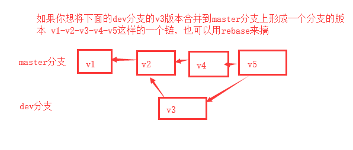
指令总结
1. git branch dev 和 git checkout dev #创建dev分支和切换到dev分支上
2. 创建一个dev.txt文件
3. git add . 和git commit -m 'dev branch'
4. git checkout master #切换到master分支上
5. 创建一个master.txt文件
6. git add .和git commit -m 'master branch' #在master分支上提交一下最新添加的master.txt文件也作为master分支上的一个版本
在dev分支上执行一个git log查看一下dev分支提交的版本
在master分支上执行一个git log 查看一下master分支提交的版本
git log --graph #图形化界面显示所有的提交记录
git log --graph --pretty=format:'%h %s' #让图形化界面显示记录的时候更清晰一些：%h是显示版本号，%s是显示版本描述。
到目前为止，我们就做出了上面那个图的效果，在dev分支上有一个版本，在master分支上有其他的版本
那么以后我们再开发的时候，可以通过rebase来让dev分支上的记录合并到master分支上，那么我们在master分支上再查看git log --graph的时候就只能看到一条线的记录了
现在我们通过rebase来合并一下dev分支上的版本，让git log显示的记录编程一条线
1. git checkout dev
2. git merge master #注意，因为dev分支上的代码没有master分支上的全，所有先合并一下master分支，然后再进行后面的操作
3. 创建一个dev1.txt -- git add . -- git commit -m 'dev branch commit 1'
3. git checkout master
4. 创建一个master1.txt文件 -- git add . -- git commit -m 'master branch commit 1'
5. 这样的话我们再dev分支上有个版本，master分支上又一个版本
6. git checkout dev
7. git rebase master #将dev分支上的这个新记录并到master分支的记录上
8. git checkout master
9. git merge dev
然后我们再执行git log --graph 就看到了一条线，并且这条线上有dev分支开发的那个版本rebase的第三个场景
不做演示了，看看图吧：

其实第三个场景有点类似我们的第二个场景，不过是产生在当我们执行pull的时候，如果本地代码和远程的代码有冲突，会导致我们本地的分支进行git log日志的分叉，所以为了防止这种分叉，我们使用fetch和rebase两个指令来代替，rebase也能够合并代码。（这个就作为了解吧）
注意：说了rebase操作其实也是合并代码的操作，那么好了，我们如果在进行rebase指令的时候，代码有冲突怎么办，手动解决冲突，然后执行一下git提示的指令，比如git add等，然后执行一个git rebase --continue，来继续执行rebase指令就可以了。
六 Git配合Beyond Compare来解决冲突
第一步： 安装beyond compare软件，下载地址：http://www.scootersoftware.com/download.php，就直接点击下载安装，然后和安装其他软件一样，点点点就可以了。
第二步：在git中进行以下配置
git config --local merge.tool bc3 #--local的意思是只对当前项目有效，其他的本地仓库是不生效的
git config --local mergetool.path '/usr/local/bin/bcomp' #beyond compare的执行程序的安装路径
git config --local mergetool.keepBackup false
如果通过上面的指令配置不能正常生效的话，就改动以下配置文件，打开 .gitconfig 配置文件 （windows 在 C:\Users\Administrator [Administrator 为你当前用户名], mac 在 ~/）,加入以下内容： [merge]
tool = bc3
[mergetool "bc3"]
path = D:/Program Files (x86)/Beyond Compare 3/BCompare.exe #注意win下是这个/路径分隔符，文件路径尽量不要出现空格昂
第三步：应用这个软件来解决冲突
当我们执行merge合并的时候，比如说，我们执行了一下git merge dev分支的指令，会报错，报一个代码冲突的错误，然后我们知道产生冲突了，此时我们就可以使用我们的beyond compare来进行冲突排查和修改，使用下面的指令来调用工具：
git mergetool
执行上面的指令之后，自动会打开beyond compare，你会 看到下面的页面：
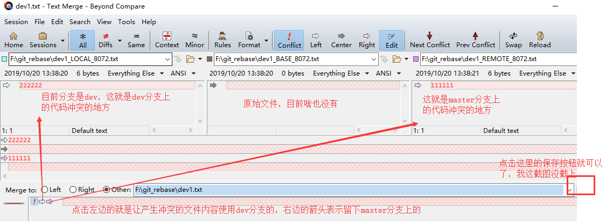
七 Git多人协作开发
多人协作开发gitflow工作流思路，看图：

创建新项目，我们来玩一下整个工作流。
第一步：创建组织
先去我们远程的GitHub上创建一个组织（其实还有另外一种邀请其他人员进行协同开发的方式，不适合公司内部开发，所以我们给大家说一种正规的，就是创建组织）。
然后进入这个页面：

再然后进入这个页面：
点击next会看到下面的页面：

然后skip之后，我们看到下面的页面：
点击创建仓库之后，就又到了我们创建仓库的页面：
然后就看到了我们仓库，这样我们的组织和仓库就创建好了。
注意，我们现在创建的项目仓库是在我们创建的组织里面创建的，和之前单纯的创建仓库是不太一样的，因为我们公司将来可能有多个项目，那么我们就可以通过这个组织来管理多个仓库就可以了。
好了，创建我们的本地git仓库，然后关联一下我们远程的这个仓库(和远程仓库名称要一直)，执行一下GitHub上创建仓库后提示的指令就可以了：
然后刷新一下我们的GitHub页面，就看到了我们push上来的代码了：
到这里我们的仓库就创建好并且和本地关联好了，那么我们继续学一个新东西，叫做tag（标签），公司一般都是用标签来管理版本的，比如看下图，我们git log查看一下当前版本：
这样去看版本的时候，一长串的版本号看着其实不太好看，我们就可以给这个版本打上一个标签tag。
Git标签
看指令：
git tag -a 'v1' -m '第一版' 再看git log：
此时，我们就给第一个版本打上了一个标签，我们还需要将他推到远程仓库：
git push origin --tags #将所有的tag推送到远程仓库
执行完这个指令之后，我们再去GitHub上看一下：
点击release看一下：
好，创建组织，创建仓库，关联仓库，给版本打标签，我们就学完了，接下来我们学一下如果邀请其他成员。
第二步：GitHub组织中邀请成员
按照我们的gitflow工作流程图来看，此时我们的master分支和第一个版本已经创建好了，接下来，我们应该创建一个dev分支，然后邀请其他成员来完成其他功能的开发
第一步：创建dev分支
第二步：将dev分支推送到远程
git push origin dev
查看一下GitHub，就有了我们的dev分支：

第三步：邀请两个成员
两个成员都需要先去GitHub上注册一下自己的GitHub账号，其他的代码托管平台也是这么玩，先去注册账号。这里我自己又通过其他的邮箱创建了一个名为Jadentest的账号，用它来测试
邀请成员
然后看到下面的页面：
点击邀请之后，弹出下面的窗口：
输入成员名称，然后点击invite，看到下面的页面，先选择一个普通成员就行了：
那么这个Jadentest在创建账户时留下的邮箱就会收到一个邮件：
点击查看这个邮件，然后点击加入组织：
然后会看到下面这个页面：
再点击join加入就可以了，但是记着，上面的页面是出现在了Jadentest这个GitHub账户中的页面，所以如果你是用一个电脑在玩，需要先登陆上这个账户，再点击邮件加入组织。
好，看一下GitHub我们的组织中people这个选项中，就有了两个成员：
好，继续登陆我们的clschao这个账户，然后看一下组织的权限以及项目的权限。
1.组织权限
在组织的settings中：
因为我们的组织中可能有很多的项目，而我邀请的成员不能说上来就对所有的项目都有修改的权限，所以是只读的，可以看看，那么如果我们想让某些成员对某些项目有修改的权限，就需要到项目中去做相关设置。
2.项目权限
点击项目，在项目页面的settings中：
这样的话，这个Jadentest成员就有了对我们这个gitflowtest项目的修改权限了，也就是可以正常的推送代码了。
好，成员已经邀请好了，然后这个成员需要在自己的本地将我们远程仓库的项目下载到自己的本地，比如我在本地创建了一个Jadentest的文件夹作为它自己的本地Git仓库。
3.新成员进行项目协作开发
将我们的远程仓库的这个gitflowtest项目的地址给他：
然后它在自己的本地下载我们的代码：
然后进入到gitflowtest文件夹中，就看到了我们远程仓库中的所有内容，进入这个文件夹，然后再运行一下我们的git bash：
那么开始开发yue功能：
比如，开发就创建了这个文件，然后这个成员就要回家了，然后将自己开发的文件推到远程仓库：
然后回到家之后，继续又想开发了：
接下来需要干什么呢？需要代码的review，一般是小组长或者技术主管或者总监等，怎么做呢，一般是通过pull request。
4.pull request合并请求
首先我们的GitHub上的项目中进行一些配置：
点击添加规则按钮之后，我们一下页面：
然后点击下面的一个create按钮，然后再点击一下左边的branches菜单：
其实master分支也可以继续添加一个这样的规则，这里我就不做演示了。
然后我们的Jadentest成员将yue功能开发完了，需要提交一个pull request请求，在哪里做呢？在他自己的GitHub上，比如我们登陆一下这个用户，然后看一下GitHub上的操作：
点击这个new pull request：
然后我这个管理员clschao就能在自己的GitHub上看到Jadentest这个成员发来的请求了：
然后点击这个yue功能：
然后就看到下面所有的文件以及代码了：
然后看到下面的页面：
然后切换会我们的这个页面：
然后还需要确定一下：
还可以删除这个分支，如果没有用了，就可以点击下面的按钮进行删除：
然后再看我们的远程仓库中的dev分支，就有了这些Jadentest新开发的代码了：
然后其他成员就可以在自己的本地通过git pull origin dev，就能将自己的本地的代码变成最新的了。
如果是做测试的，一般是从我们的dev分支上去获取代码进行测试，测试如果出现了bug，开分支进行修复，然后再合并会dev分支，然后再测试，没有问题的话，合并到master分支上，然后进行项目上线。
八 给开源项目贡献代码
第一步：找项目
找到一个项目，比如我们的tornado框架，python的，大家在GitHub上搜索tornado就可以了：

如果 你发现这个框架有些bug，或者是有些功能不够完善，那么我们就可以拿来进行修改。
第二步：fork
先进行fork，点击一下fork就能够将这个项目放到自己账号的空间中了，其实就是将别人空间中的代码拷贝到了自己的账户中：

然后会看到下面的页面：
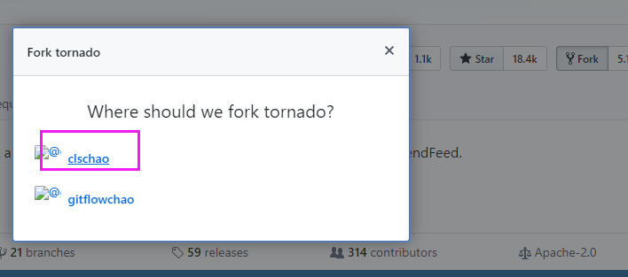
选择自己的账户之后，就可以在自己的账户中看到这个项目了，看下图：

第三步：在自己的仓库中修改代码
就又回到了我们之前的流程。

然后在本地创建文件夹，clone代码：

比如，我创建了一个bug文件，写上一些内容，然后提交push到自己远程仓库中的这个tornado项目里面：
第四步： 提交pull request
给源代码作者提交修复bug或者拓展功能的申请，其实就是提交一个pull request。
这样我们添加的bug.txt文件就保存到了我们的远程仓库的tornado项目中了。
然后如果我们想将修改的内容提交给源代码的话，需要发一个pull request申请：
然后看到下面的页面：下面是你的仓库中的这个项目的master分支往源代码的作者的仓库中的master分支上请求合并。只要点击pull request，那么申请就发过去了，如果人家合并了你的申请，你就nb了。

这就是为开源项目贡献代码的过程。
九 Git配置文件详解
配置文件其实分三个：
1.项目配置文件
只有当前的git项目生效， 在项目的.git/config文件中，对应的配置指令：
git config --local user.name 'wuchao'
git config --local user.email 'wuchao@xx.com'2.全局配置文件
所有git管理的项目都生效，mac电脑在~/.gitconfig中，windows在：，对应配置指令：
git config --global user.name 'wuchao'
git config --global user.name 'wuchao@xx.com'3.系统配置文件
所有项目都生效，mac在/etc/.gitconfig文件中，windows在： ，对应配置指令： git config --system user.name 'wupeiq'
git config --system user.name 'wupeiqi@xx.com'
注意：需要管理员权限，也就是root权限 应用场景：
#配置用户名和邮箱
git config --local user.name 'wuchao'
git config --local user.email 'wuchao@xx.com'
#配置beyond compare工具
git config --local merge.tool bc3
git config --local mergetool.path '/usr/local/bin/bcomp' #工具路径
git config --local mergetool.keepBackup false
#配置push的时候的远程仓库的地址
git remote add origin 地址， 默认是添加在了本地配置文件中（--local）
使用配置项的顺序：本地配置--全局配置--系统配置。
更多的配置相关内容和指令：
配置 Git 的相关参数。
Git 一共有3个配置文件：
1. 仓库级的配置文件：在仓库的 .git/.gitconfig，该配置文件只对所在的仓库有效。
2. 全局配置文件：Mac 系统在 ~/.gitconfig，Windows 系统在 C:\Users\<用户名>\.gitconfig。
3. 系统级的配置文件：在 Git 的安装目录下（Mac 系统下安装目录在 /usr/local/git）的 etc 文件夹中的 gitconfig。
看指令：
# 查看配置信息
# --local：仓库级，--global：全局级，--system：系统级
$ git config <--local | --global | --system> -l
# 查看当前生效的配置信息
$ git config -l
# 编辑配置文件
# --local：仓库级，--global：全局级，--system：系统级
$ git config <--local | --global | --system> -e
# 添加配置项
# --local：仓库级，--global：全局级，--system：系统级
$ git config <--local | --global | --system> --add <name> <value>
# 获取配置项
$ git config <--local | --global | --system> --get <name>
# 删除配置项
$ git config <--local | --global | --system> --unset <name>
# 配置提交记录中的用户信息
$ git config --global user.name <用户名>
$ git config --global user.email <邮箱地址>
# 更改Git缓存区的大小
# 如果提交的内容较大，默认缓存较小，提交会失败
# 缓存大小单位：B，例如：524288000（500MB）
$ git config --global http.postBuffer <缓存大小>
# 调用 git status/git diff 命令时以高亮或彩色方式显示改动状态
$ git config --global color.ui true
# 配置可以缓存密码，默认缓存时间15分钟
$ git config --global credential.helper cache
# 配置密码的缓存时间
# 缓存时间单位：秒
$ git config --global credential.helper 'cache --timeout=<缓存时间>'
# 配置长期存储密码
$ git config --global credential.helper store
十 Git远程仓库免密登陆
其实之前的git版本在我们进行push的时候，每次都需要输入用户名和密码，很麻烦，所以出现了免密登陆的形式，下面我们说三种免密登陆的形式。
1.在url中进行体现
原来的地址： https://github.com/wuchao/dbhot.git
修改的地址： https://用户名:密码@github.com/wuchao/dbhot.git #这样就在使用远程地址的时候直接加上了用户名和密码，就不需要每次都重新输入了
git remote add origin https://用户名:密码@github.com/wuchao/dbhot.git
git push origin master
上面的这种形式还可以通过修改配置文件来搞：找到项目的.git文件夹中的config文件，然后打开修改，这里我就不做演示了，简单看一下图吧：
2.通过SSH实现(公私钥)
其实远程仓库的每个项目都可以获取一个ssh的地址，看图：

点击这个use ssh之后，就看到下面的内容：

这里我们看到了一个地址，其实这个地址是不能直接用的，需要下面的步骤才能通过它来进行免密登陆：
a. 现在自己的电脑上生成公钥和私钥，看指令：
ssh-keygen #或者ssh-keygen -r rsa
这样的话就会在C:\Users\chao\.ssh 目录下生成两个文件（mac是在~/.ssh 文件夹下）

b.拷贝公钥文件中的内容，放到GitHub的配置中：
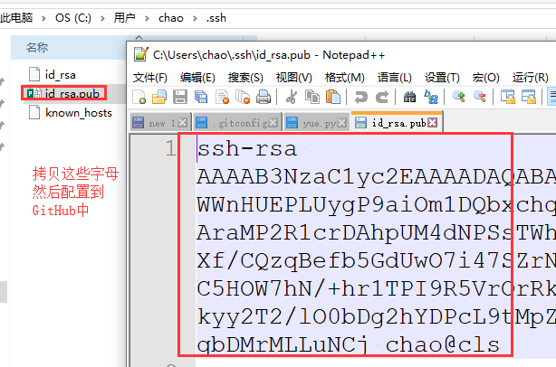
找到GitHub的settings配置：
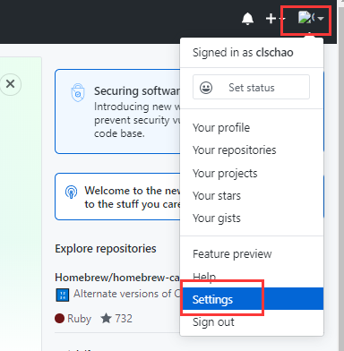

然后添加一下公钥文件中的内容就可以了：

然后提示你确认密码：
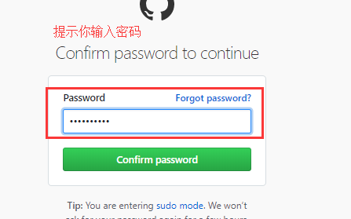
然后看到下面的页面，就已经配置好了 ：

c. 在本地的git中配置远程的ssh地址
git remote add origin git@github.com:gitflowchao/gitflowtest.git #这个地址是ssh的地址了 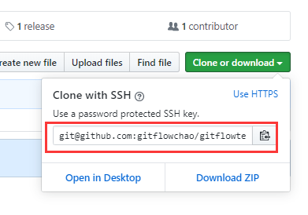
d. 以后在使用就不用用户名和密码了：
git push origin master
3.git自动管理凭证
其实你会发现，我们输入过一次用户名和密码之后，其实之后的操作一直也不需要再次输入用户名和密码了，因为git自动帮我们管理起来了，这个也在一个地方存着，这里我就不做演示了，你知道一下就行了，这种方式其实我们用起来比较方便，但是其实企业里面一般都是用的第二种，也就是ssh的那种。
十一 Git忽略文件
其实我们让git管理文件的时候，可以设置一些让git忽略的文件或者文件夹，通过一个叫做 .gitignore的文件，首先在我们的git本地仓库中创建一个这样的文件，文件中写上一下内容，看例子：

添加让git忽略的文件：

还可以添加.gitignore自己，通过*.txt能够将所有的.txt结尾的文件全部让git忽略掉
什么时候来用的，举个例子，当我们使用python语言的django框架来进行代码开发的时候，这个框架会自动生成一个sqlite数据库文件在项目中，其实这样项目将来在我们提交代码的时候，不需要提交的，所以就可以将它设置为忽略就可以了。
gitignore文件中还有下面的一些写法：

其实我们在写项目的时候，不管你用什么开发语言，其实都会有一些你关注不到的，但是自动生成的，还不需要提交的一些文件，这里呢，GitHub给我们提供了一个各种开发语言的一个可忽略的文件汇总，只需要将对应语言的文件中的内容拷贝到我们的gitignore文件中就可以了，看下图，在GitHub上搜索gitingore。
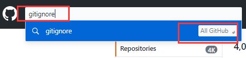

然后看到下面的内容： 地址： https://github.com/github/gitignore
然后：

注意，在公司进行开发的时候，一定要加上gitignore，不然容易将一些敏感的信息提交到远程，不安全。
十二 GitHub做任务管理相关
1.issues
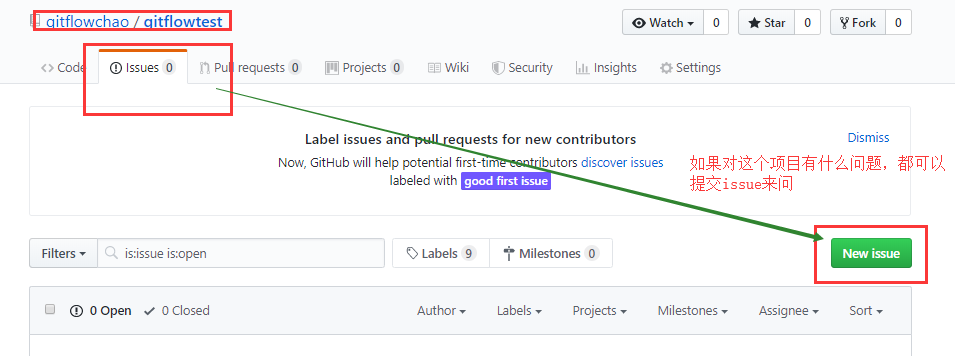
然后看下图：
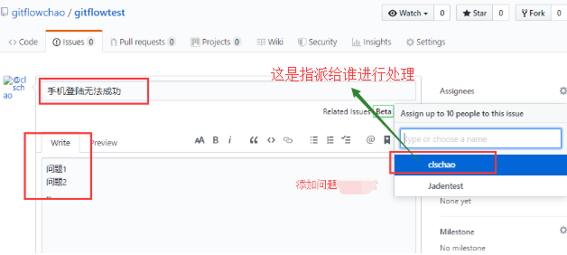
还可以看下图，给问题打个标签，你是提的bug啊还是文档啊还是什么的。。。
还可以做bug管理，比如你提的这个问题是个bug，你可以选择bug类型，然后指派给别人进行处理。

然后我们再点击上面这个issues选项，会看到下面的页面：
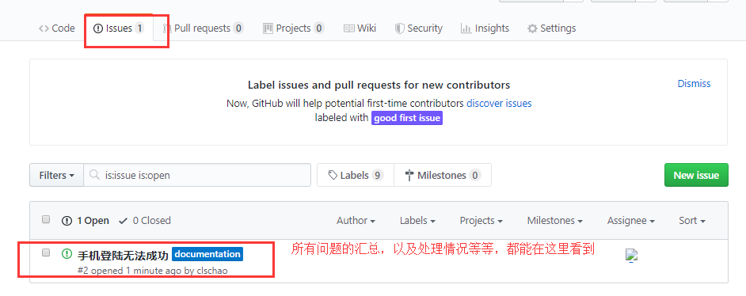
2.wiki
项目介绍，百科，其实写一个项目，都需要写wiki，来做项目的整体描述和说明，其他人来参与项目的时候，先看wiki。

然后看到下面的页面：